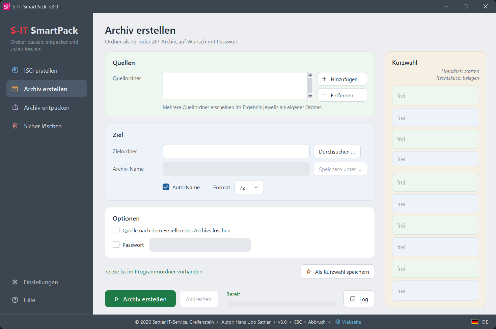
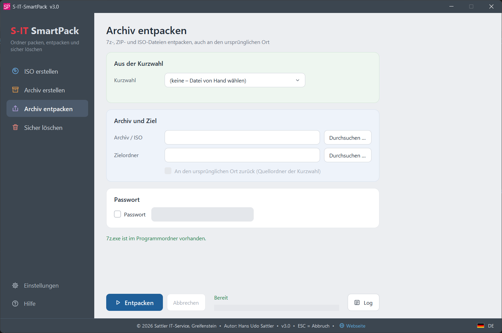
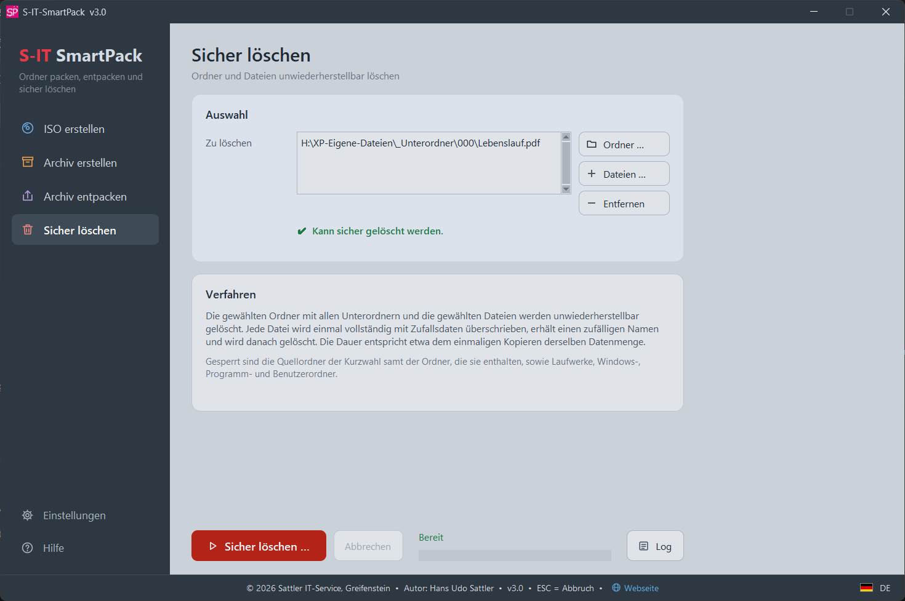
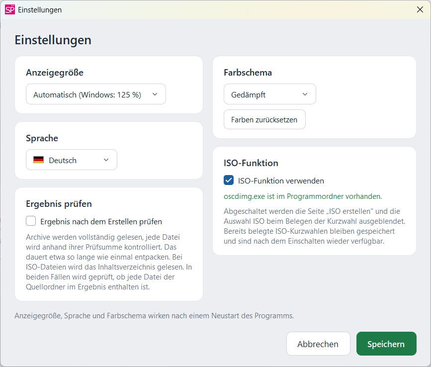
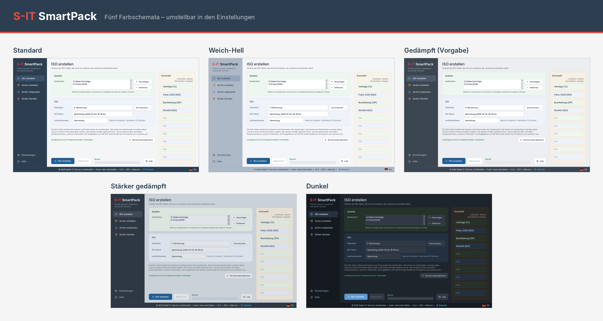

SmartPack ist ursprünglich als Arbeitserleichterung in der Werkstatt entstanden: Ordner mit einem Klick als ISO-Datei oder Archiv ablegen und bei Bedarf ebenso schnell zurückholen. Mit der Zeit kamen mehr Funktionen hinzu, die auch anderen die Arbeit erleichtern können – deshalb stelle ich das Tool hier kostenlos zur Verfügung.
SmartPack verwendet zum Packen und Entpacken 7-Zip. Darüber hinaus bietet es per Mausklick:
Kurzwahl mit einem Klick
Zehn Knöpfe speichern feste Aufgaben mit Quellordnern, Zielordner, Format und auf Wunsch Passwort. Jeder Lauf erhält Datum und Uhrzeit im Dateinamen – so entstehen nebeneinander datierte Stände.
ISO-Dateien aus Ordnern
Auch mehrere Ordner von verschiedenen Laufwerken landen in einer einzigen ISO-Datei. Ein Doppelklick bindet sie im Explorer als Laufwerk ein, auf jedem Windows-PC ohne Zusatzprogramm.
7z und ZIP
Höchste Kompressionsstufe, auf Wunsch mit Passwort. 7z verschlüsselt dabei auch die Dateinamen; ZIP lässt sich unter Windows ohne Zusatzprogramm öffnen.
Zurückholen per Kurzwahl
Der neueste Stand wird selbst gefunden, das gespeicherte Passwort verwendet und der Inhalt auf Wunsch an den ursprünglichen Ort zurückgeschrieben – für Archive und ISO-Dateien.
Gespeicherte Passwörter verschlüsselt
Ein Passwort in der Kurzwahl ist nur für den Windows-Benutzer lesbar, der es gespeichert hat, und nur auf diesem PC. Das Archiv selbst lässt sich mit dem Passwort auf jedem PC entpacken.
Ergebnis prüfen
Auf Wunsch wird jedes Archiv vollständig gelesen und jede Datei anhand ihrer Prüfsumme kontrolliert. Bei Archiv und ISO wird zusätzlich geprüft, ob jede Datei der Quellordner enthalten ist.
Gesperrte und nicht lesbare Dateien
Sie werden übersprungen, der Vorgang läuft weiter. Am Ende stehen sie nach Art getrennt im Ergebnisfenster, bei nicht lesbaren Dateien mit einem Hinweis auf S-IT-SSD-Check.
Prüfungen vor dem Start
Freier Speicher, die 4-GB-Grenze von FAT32, ein Zielordner innerhalb der Quelle und gleichnamige Quellordner werden erkannt, bevor etwas geschrieben wird.
Sicher löschen
Ordner und Dateien, etwa alte ISO-, 7z- und ZIP-Stände, werden einmal vollständig überschrieben und gelöscht. Quellordner der Kurzwahl, Windows-, Programm- und Benutzerordner sind gesperrt; bestätigt wird über eine Zufallszahl.
Fünf Farbschemata
Standard, Weich-Hell, Gedämpft, Stärker gedämpft und Dunkel – dazu eine Anzeigegröße von 90 bis 150 %, unabhängig von der Skalierung in Windows.
Drei Sprachen
Deutsch, Englisch und Niederländisch – umstellbar in den Einstellungen über die Flagge rechts unten. Die Hilfe liegt in allen drei Sprachen vor.
Portabel
Keine Installation, keine Administratorrechte. Der ganze Ordner lässt sich verschieben oder auf einen anderen PC kopieren; Einstellungen und Kurzwahl liegen im Programmordner.
S-IT-SmartPack gibt es auf Deutsch, Englisch und Niederländisch. Die Sprache lässt sich jederzeit in den Einstellungen umstellen; Hilfe und Anleitung zu oscdimg.exe liegen in allen drei Sprachen vor.
Nederlands





Die aktuelle Version finden Sie im Release-Bereich auf GitHub.
| Komponente | Anforderung |
|---|---|
| Betriebssystem | Windows 10 / Windows 11 (64-Bit) |
| Bildschirm | Ab 1366 × 768 – optimiert für Full HD und höher |
| Sprachen | Deutsch, Englisch, Niederländisch – im Programm umstellbar, Hilfe in allen drei Sprachen |
| Rechte | Keine Administratorrechte erforderlich |
| Installation | Nicht erforderlich – portabel, direkt aus dem Ordner startbar |
| ISO-Funktion | Benötigt oscdimg.exe von Microsoft (nicht enthalten) – Anleitung |
| Lieferumfang | S-IT-SP-Start.exe zum Starten, Ordner S-IT-SmartPack_Prog (Programm, 7z.exe und 7z.dll, Unterordner Lang für die Sprachpakete und Help für die Hilfe in drei Sprachen) und Ordner License-Disclaimer (Lizenz, Haftungsausschluss und 7-Zip-Lizenz) |
- Erste veröffentlichte Version
- ISO-Dateien sowie 7z- und ZIP-Archive aus einem oder mehreren Ordnern, auch von verschiedenen Laufwerken
- Zehn Kurzwahl-Knöpfe für feste Aufgaben, Passwörter verschlüsselt gespeichert
- Archive und ISO-Dateien entpacken, per Kurzwahl auch an den ursprünglichen Ort
- Ergebnis prüfen, gesperrte und nicht lesbare Dateien überspringen, sicher löschen
- Oberfläche mit Seitenleiste, fünf Farbschemata, Deutsch, Englisch und Niederländisch
S-IT-SmartPack wird kostenlos entwickelt und gepflegt – über eine kleine Unterstützung freue ich mich:
PayPal – tool-entwicklung@sattler-it.de